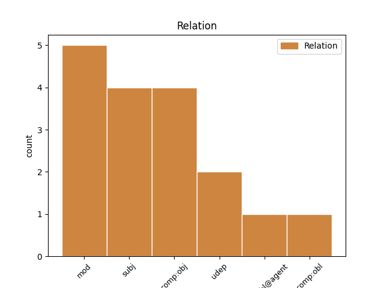
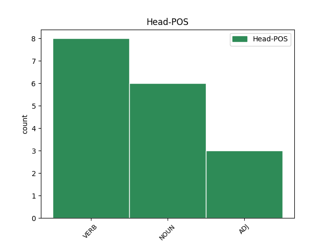
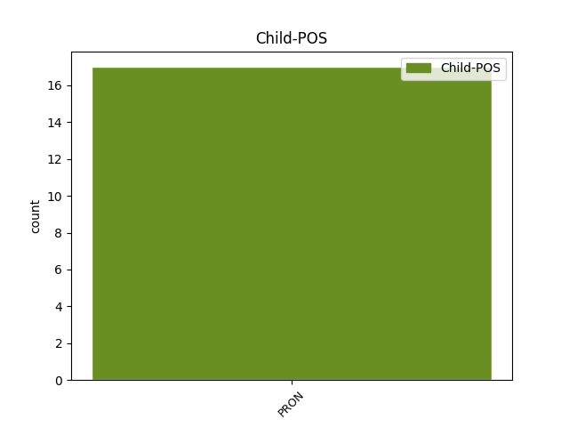

Distribution of features within this leaf



Agreement Rules sorted by frequency.
- When the dependent token is the subject(subj) of the head token, and the head token is VERB and the dependent token is PRON.
1 Mes _ _ _ _ 0 _ _ _
2 irgi _ _ _ _ 0 _ _ _
3 dažnai _ _ _ _ 0 _ _ _
4 netikime _ _ _ _ 0 _ _ _
5 , _ _ _ _ 0 _ _ _
6 kad _ _ _ _ 0 _ _ _
7 Lietuva _ _ _ _ 0 _ _ _
8 gali _ _ _ _ 0 _ _ _
9 išlikti _ _ _ _ 0 _ _ _
10 laisvės _ _ _ _ 0 _ _ _
11 sąlygomis _ _ _ _ 0 _ _ _
12 , _ _ _ _ 0 _ _ _
13 neturėdama _ _ _ _ 0 _ _ _
14 ir _ _ _ _ 0 _ _ _
15 pati pats PRON DT Case=Nom|Gender=Fem|Number=Sing 16 subj _ En=itself
16 nesikurdama kurtis VERB VBG Gender=Fem|Number=Sing|Polarity=Neg|Reflex=Yes|VerbForm=PartPus|Voice=Act 0 _ _ _
17 sau _ _ _ _ 0 _ _ _
18 priešų _ _ _ _ 0 _ _ _
19 . _ _ _ _ 0 _ _ _
1 Strepsiadas _ _ _ _ 0 _ _ _
2 – _ _ _ _ 0 _ _ _
3 patriarchališkai _ _ _ _ 0 _ _ _
4 doras _ _ _ _ 0 _ _ _
5 žemdirbys _ _ _ _ 0 _ _ _
6 , _ _ _ _ 0 _ _ _
7 kurio kuris PRON WPA Case=Gen|Gender=Masc|Number=Sing 8 mod _ En=which
8 sūnus sūnus NOUN NN Case=Acc|Gender=Masc|Number=Plur 0 _ _ _
9 , _ _ _ _ 0 _ _ _
10 kaip _ _ _ _ 0 _ _ _
11 paprastai _ _ _ _ 0 _ _ _
12 būna _ _ _ _ 0 _ _ _
13 , _ _ _ _ 0 _ _ _
14 jau _ _ _ _ 0 _ _ _
15 pasidavė _ _ _ _ 0 _ _ _
16 naujoms _ _ _ _ 0 _ _ _
17 madoms _ _ _ _ 0 _ _ _
18 ir _ _ _ _ 0 _ _ _
19 dėl _ _ _ _ 0 _ _ _
20 to _ _ _ _ 0 _ _ _
21 kelia _ _ _ _ 0 _ _ _
22 tėvui _ _ _ _ 0 _ _ _
23 nerimą _ _ _ _ 0 _ _ _
24 . _ _ _ _ 0 _ _ _
1 Svarbiausias _ _ _ _ 0 _ _ _
2 daiktas daiktas NOUN NN Case=Nom|Gender=Masc|Number=Sing 0 _ _ _
3 jam jis PRON PRP Case=Dat|Gender=Masc|Number=Sing|Person=3 2 udep _ En=he
4 yra _ _ _ _ 0 _ _ _
5 tėvų _ _ _ _ 0 _ _ _
6 priesaikai _ _ _ _ 0 _ _ _
7 ir _ _ _ _ 0 _ _ _
8 tautinės _ _ _ _ 0 _ _ _
9 šventenybės _ _ _ _ 0 _ _ _
10 . _ _ _ _ 0 _ _ _
1 Bet _ _ _ _ 0 _ _ _
2 kad _ _ _ _ 0 _ _ _
3 ir _ _ _ _ 0 _ _ _
4 ką _ _ _ _ 0 _ _ _
5 sakysi _ _ _ _ 0 _ _ _
6 , _ _ _ _ 0 _ _ _
7 vienas _ _ _ _ 0 _ _ _
8 skirtumas _ _ _ _ 0 _ _ _
9 yra _ _ _ _ 0 _ _ _
10 akivaizdus _ _ _ _ 0 _ _ _
11 – _ _ _ _ 0 _ _ _
12 Sokratas _ _ _ _ 0 _ _ _
13 nebūtų _ _ _ _ 0 _ _ _
14 padegęs _ _ _ _ 0 _ _ _
15 Strepsiado _ _ _ _ 0 _ _ _
16 namų _ _ _ _ 0 _ _ _
17 ir _ _ _ _ 0 _ _ _
18 nebūtų _ _ _ _ 0 _ _ _
19 jo jis PRON PRP Case=Gen|Gender=Masc|Number=Sing|Person=3 20 comp:obj _ En=he
20 įskundinėjęs įskundinėti VERB VBNH Case=Nom|Definite=Ind|Gender=Masc|Number=Sing|Polarity=Pos|Reflex=No|Tense=PastSimp|VerbForm=Part|Voice=Act 0 _ _ _
21 valdžiai _ _ _ _ 0 _ _ _
22 . _ _ _ _ 0 _ _ _
1 Už _ _ _ _ 0 _ _ _
2 tą _ _ _ _ 0 _ _ _
3 pasaulį _ _ _ _ 0 _ _ _
4 buvo _ _ _ _ 0 _ _ _
5 brangiai _ _ _ _ 0 _ _ _
6 sumokėta _ _ _ _ 0 _ _ _
7 ir _ _ _ _ 0 _ _ _
8 ligi _ _ _ _ 0 _ _ _
9 šiol _ _ _ _ 0 _ _ _
10 mokama _ _ _ _ 0 _ _ _
11 , _ _ _ _ 0 _ _ _
12 bet _ _ _ _ 0 _ _ _
13 man _ _ _ _ 0 _ _ _
14 jis jis PRON PRP Case=Nom|Gender=Masc|Number=Sing|Person=3 15 subj _ En=it
15 mielesnis mielas ADJ JJR Case=Nom|Definite=Ind|Degree=Cmp|Gender=Masc|Number=Sing 0 _ _ _
16 ar _ _ _ _ 0 _ _ _
17 bent _ _ _ _ 0 _ _ _
18 jau _ _ _ _ 0 _ _ _
19 įdomesnis _ _ _ _ 0 _ _ _
20 negu _ _ _ _ 0 _ _ _
21 Strepsiado _ _ _ _ 0 _ _ _
22 pasaulis _ _ _ _ 0 _ _ _
23 . _ _ _ _ 0 _ _ _
1 Savarankiškas _ _ _ _ 0 _ _ _
2 , _ _ _ _ 0 _ _ _
3 nieko niekas PRON DT Case=Gen|Gender=Masc|Number=Sing 4 comp:obl@agent _ En=nothing
4 neribojamas riboti VERB VBNL Case=Nom|Definite=Ind|Gender=Masc|Number=Sing|Polarity=Neg|Reflex=No|Tense=Pres|VerbForm=Part|Voice=Pass 0 _ _ _
5 valstybingumas _ _ _ _ 0 _ _ _
6 laikomas _ _ _ _ 0 _ _ _
7 absoliučia _ _ _ _ 0 _ _ _
8 ir _ _ _ _ 0 _ _ _
9 pirmąja _ _ _ _ 0 _ _ _
10 vertybe _ _ _ _ 0 _ _ _
11 , _ _ _ _ 0 _ _ _
12 nepalyginti _ _ _ _ 0 _ _ _
13 svarbesne _ _ _ _ 0 _ _ _
14 už _ _ _ _ 0 _ _ _
15 demokratiją _ _ _ _ 0 _ _ _
16 , _ _ _ _ 0 _ _ _
17 žmogiškumą _ _ _ _ 0 _ _ _
18 ar _ _ _ _ 0 _ _ _
19 sveiką _ _ _ _ 0 _ _ _
20 protą _ _ _ _ 0 _ _ _
21 . _ _ _ _ 0 _ _ _
Disagree Examples:
1 „ _ _ _ _ 0 _ _ _
2 Šis _ _ _ _ 0 _ _ _
3 apdovanojimas _ _ _ _ 0 _ _ _
4 jai ji PRON PRP Case=Dat|Gender=Fem|Number=Sing|Person=3 5 comp:obl _ En=she
5 skirtas skirti VERB VBNL Case=Nom|Definite=Ind|Gender=Masc|Number=Sing|Polarity=Pos|Reflex=No|Tense=Past|VerbForm=Part|Voice=Pass 0 _ _ _
6 už _ _ _ _ 0 _ _ _
7 dialogo _ _ _ _ 0 _ _ _
8 kūrimą _ _ _ _ 0 _ _ _
9 , _ _ _ _ 0 _ _ _
10 atminties _ _ _ _ 0 _ _ _
11 skatinimą _ _ _ _ 0 _ _ _
12 ir _ _ _ _ 0 _ _ _
13 sakymą _ _ _ _ 0 _ _ _
14 , _ _ _ _ 0 _ _ _
15 kad _ _ _ _ 0 _ _ _
16 svetimo _ _ _ _ 0 _ _ _
17 skausmo _ _ _ _ 0 _ _ _
18 nėra _ _ _ _ 0 _ _ _
19 , _ _ _ _ 0 _ _ _
20 kad _ _ _ _ 0 _ _ _
21 XX _ _ _ _ 0 _ _ _
22 amžiaus _ _ _ _ 0 _ _ _
23 tragedijos _ _ _ _ 0 _ _ _
24 – _ _ _ _ 0 _ _ _
25 Holokauskas _ _ _ _ 0 _ _ _
26 , _ _ _ _ 0 _ _ _
27 tremtis _ _ _ _ 0 _ _ _
28 – _ _ _ _ 0 _ _ _
29 palietė _ _ _ _ 0 _ _ _
30 visus _ _ _ _ 0 _ _ _
31 Lietuvos _ _ _ _ 0 _ _ _
32 piliečius _ _ _ _ 0 _ _ _
33 , _ _ _ _ 0 _ _ _
34 nepaisant _ _ _ _ 0 _ _ _
35 jų _ _ _ _ 0 _ _ _
36 tautybės _ _ _ _ 0 _ _ _
37 “ _ _ _ _ 0 _ _ _
38 , _ _ _ _ 0 _ _ _
39 – _ _ _ _ 0 _ _ _
40 BNS _ _ _ _ 0 _ _ _
41 sakė _ _ _ _ 0 _ _ _
42 Sugiharos _ _ _ _ 0 _ _ _
43 fondo _ _ _ _ 0 _ _ _
44 „ _ _ _ _ 0 _ _ _
45 Diplomatai _ _ _ _ 0 _ _ _
46 už _ _ _ _ 0 _ _ _
47 gyvybę _ _ _ _ 0 _ _ _
48 “ _ _ _ _ 0 _ _ _
49 atstovas _ _ _ _ 0 _ _ _
50 Linas _ _ _ _ 0 _ _ _
51 Venclauskas _ _ _ _ 0 _ _ _
52 . _ _ _ _ 0 _ _ _
1 Jam jis PRON PRP Case=Dat|Gender=Masc|Number=Sing|Person=3 4 comp:obj _ En=he
2 viskas _ _ _ _ 0 _ _ _
3 yra _ _ _ _ 0 _ _ _
4 aišku aiškus ADJ JJL Definite=Ind|Degree=Pos|Gender=Neut|Polarity=Pos 0 _ _ _
5 , _ _ _ _ 0 _ _ _
6 jis _ _ _ _ 0 _ _ _
7 lengvai _ _ _ _ 0 _ _ _
8 skiria _ _ _ _ 0 _ _ _
9 gėrį _ _ _ _ 0 _ _ _
10 ir _ _ _ _ 0 _ _ _
11 blogį _ _ _ _ 0 _ _ _
12 , _ _ _ _ 0 _ _ _
13 juodą _ _ _ _ 0 _ _ _
14 ir _ _ _ _ 0 _ _ _
15 baltą _ _ _ _ 0 _ _ _
16 . _ _ _ _ 0 _ _ _
1 Mąstanti _ _ _ _ 0 _ _ _
2 asmenybė _ _ _ _ 0 _ _ _
3 jam jis PRON PRP Case=Dat|Gender=Masc|Number=Sing|Person=3 4 udep _ En=he
4 svarbesnė svarbus ADJ JJR Case=Nom|Definite=Ind|Degree=Cmp|Gender=Fem|Number=Sing 0 _ _ _
5 už _ _ _ _ 0 _ _ _
6 kolektyvą _ _ _ _ 0 _ _ _
7 , _ _ _ _ 0 _ _ _
8 bendruomenę _ _ _ _ 0 _ _ _
9 , _ _ _ _ 0 _ _ _
10 tautą _ _ _ _ 0 _ _ _
11 . _ _ _ _ 0 _ _ _
1 Jei _ _ _ _ 0 _ _ _
2 būtų _ _ _ _ 0 _ _ _
3 laimėjęs _ _ _ _ 0 _ _ _
4 Strepsiadas _ _ _ _ 0 _ _ _
5 , _ _ _ _ 0 _ _ _
6 tiksliau _ _ _ _ 0 _ _ _
7 , _ _ _ _ 0 _ _ _
8 Strepsiado _ _ _ _ 0 _ _ _
9 idėja _ _ _ _ 0 _ _ _
10 – _ _ _ _ 0 _ _ _
11 ligi _ _ _ _ 0 _ _ _
12 šiol _ _ _ _ 0 _ _ _
13 gyventume _ _ _ _ 0 _ _ _
14 dorų _ _ _ _ 0 _ _ _
15 , _ _ _ _ 0 _ _ _
16 darbščių _ _ _ _ 0 _ _ _
17 , _ _ _ _ 0 _ _ _
18 patriarchališkų _ _ _ _ 0 _ _ _
19 , _ _ _ _ 0 _ _ _
20 tėvynę _ _ _ _ 0 _ _ _
21 mylinčių _ _ _ _ 0 _ _ _
22 žemdirbių _ _ _ _ 0 _ _ _
23 bendruomenėse _ _ _ _ 0 _ _ _
24 , _ _ _ _ 0 _ _ _
25 nieko niekas PRON DT Case=Gen|Gender=Masc|Number=Sing 26 comp:obj _ En=nothing
26 nežinančiose žinoti VERB VBNL Case=Loc|Definite=Ind|Gender=Fem|Number=Plur|Polarity=Neg|Reflex=No|Tense=Pres|VerbForm=Part|Voice=Act 0 _ _ _
27 ir _ _ _ _ 0 _ _ _
28 nenorinčiose _ _ _ _ 0 _ _ _
29 žinoti _ _ _ _ 0 _ _ _
30 apie _ _ _ _ 0 _ _ _
31 tolimesnius _ _ _ _ 0 _ _ _
32 kraštus _ _ _ _ 0 _ _ _
33 ir _ _ _ _ 0 _ _ _
34 visatą _ _ _ _ 0 _ _ _
35 – _ _ _ _ 0 _ _ _
36 beje _ _ _ _ 0 _ _ _
37 , _ _ _ _ 0 _ _ _
38 apsuptose _ _ _ _ 0 _ _ _
39 nekenčiamų _ _ _ _ 0 _ _ _
40 ir _ _ _ _ 0 _ _ _
41 iš _ _ _ _ 0 _ _ _
42 tikro _ _ _ _ 0 _ _ _
43 pavojingų _ _ _ _ 0 _ _ _
44 barbarų _ _ _ _ 0 _ _ _
45 genčių _ _ _ _ 0 _ _ _
46 . _ _ _ _ 0 _ _ _
1 Kas _ _ _ _ 0 _ _ _
2 sovietams _ _ _ _ 0 _ _ _
3 tikrai _ _ _ _ 0 _ _ _
4 rūpėjo _ _ _ _ 0 _ _ _
5 padaryti _ _ _ _ 0 _ _ _
6 , _ _ _ _ 0 _ _ _
7 tas _ _ _ _ 0 _ _ _
8 jiems _ _ _ _ 0 _ _ _
9 ir _ _ _ _ 0 _ _ _
10 pavyko _ _ _ _ 0 _ _ _
11 : _ _ _ _ 0 _ _ _
12 savo _ _ _ _ 0 _ _ _
13 valdinius _ _ _ _ 0 _ _ _
14 , _ _ _ _ 0 _ _ _
15 kad _ _ _ _ 0 _ _ _
16 ir _ _ _ _ 0 _ _ _
17 kokia _ _ _ _ 0 _ _ _
18 kalba _ _ _ _ 0 _ _ _
19 jie _ _ _ _ 0 _ _ _
20 kalbėtų _ _ _ _ 0 _ _ _
21 ir _ _ _ _ 0 _ _ _
22 kuo _ _ _ _ 0 _ _ _
23 save _ _ _ _ 0 _ _ _
24 laikytų _ _ _ _ 0 _ _ _
25 , _ _ _ _ 0 _ _ _
26 jie _ _ _ _ 0 _ _ _
27 smarkiai _ _ _ _ 0 _ _ _
28 demoralizavo _ _ _ _ 0 _ _ _
29 , _ _ _ _ 0 _ _ _
30 įdiegė _ _ _ _ 0 _ _ _
31 jiems _ _ _ _ 0 _ _ _
32 siaurą _ _ _ _ 0 _ _ _
33 primityvų _ _ _ _ 0 _ _ _
34 mentalitetą _ _ _ _ 0 _ _ _
35 , _ _ _ _ 0 _ _ _
36 kurio kuris PRON WPA Case=Gen|Gender=Masc|Number=Sing 37 mod _ En=which
37 dalis dalis NOUN NN Case=Nom|Gender=Fem|Number=Sing 0 _ _ _
38 , _ _ _ _ 0 _ _ _
39 beje _ _ _ _ 0 _ _ _
40 , _ _ _ _ 0 _ _ _
41 buvo _ _ _ _ 0 _ _ _
42 ir _ _ _ _ 0 _ _ _
43 ksenofobija _ _ _ _ 0 _ _ _
44 , _ _ _ _ 0 _ _ _
45 ir _ _ _ _ 0 _ _ _
46 neapykanta _ _ _ _ 0 _ _ _
47 visokiems _ _ _ _ 0 _ _ _
48 „ _ _ _ _ 0 _ _ _
49 kosmopolitams _ _ _ _ 0 _ _ _
50 “ _ _ _ _ 0 _ _ _
51 . _ _ _ _ 0 _ _ _